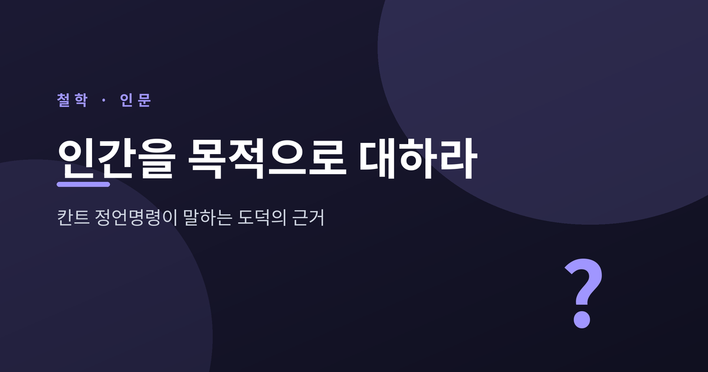
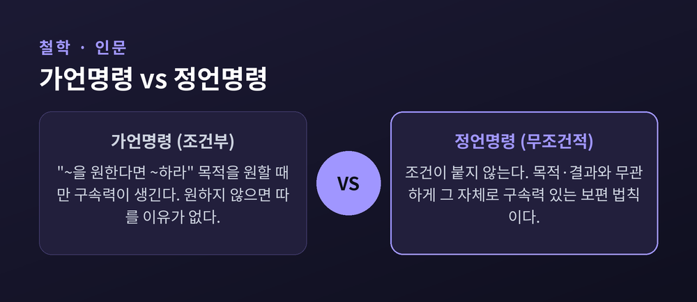
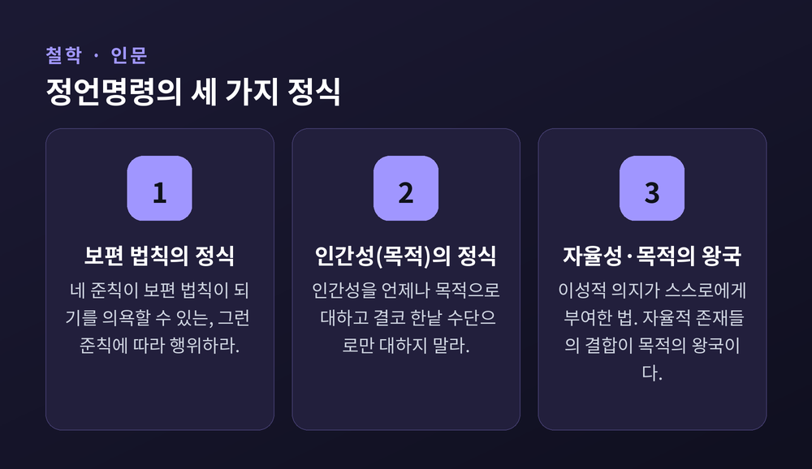
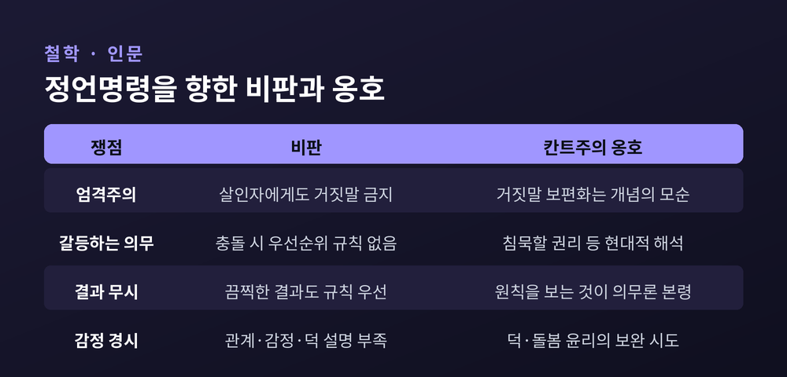

인간을 수단이 아니라 목적으로

이번 글에서는 칸트의 정언명령을, 그중에서도 "인간을 수단이 아니라 목적으로 대하라"는 두 번째 정식을 정리해 보겠습니다.
먼저 결론부터 짧게 말씀드립니다. 정언명령은 칸트가 "도덕의 최고 원리"로 본 무조건적 명령이며, 그 핵심 중 하나는 모든 사람을 그 자체로 목적인 존재로 존중하라는 것입니다. 거짓과 강제로 타인의 판단을 우회하는 순간, 우리는 그를 한낱 수단으로만 다루게 됩니다. 아래에서 가언명령과의 차이, 세 정식, 그리고 비판과 옹호까지 차례로 풀어 보겠습니다.
칸트(Immanuel Kant, 1724–1804)의 윤리학은 의무론의 대표 이론입니다. 의무론은 행위의 결과가 아니라, 그 행위를 이끄는 의무와 동기, 원칙으로 도덕성을 판단합니다.
예전의 결과주의는 행위의 결과를 보고 옳고 그름을 따졌습니다. 지금 칸트가 보는 곳은 다릅니다. 그는 행위 배후의 의도, 곧 어떤 원칙에 따라 움직였는가를 봅니다. 칸트에게 도덕성이란 결국 실천 이성의 원리이며, 합리적 존재라면 누구나 따라야 하는 것입니다.
여기서 두 종류의 명령이 갈립니다.
칸트의 첫 번째 공식 정식은 이렇습니다. "네 의지의 준칙이 동시에 보편적 법칙이 되기를 네가 의욕할 수 있는, 오직 그런 준칙에 따라서만 행위하라." 여기서 준칙(maxim)이란 행위자가 따르는 주관적 행위 원칙을 말합니다. 정언명령은 이 준칙이 보편화될 수 있는지를 시험합니다.

정언명령은 처음에 칸트의 1785년 저작 『도덕형이상학 정초』에서 정식화되었습니다. 보통 세 가지 정식이 핵심으로 꼽힙니다. 칸트는 이 셋이 서로 다른 정식이 아니라, 같은 도덕 법칙을 다른 측면에서 표현한 것이라고 보았습니다.
1. 보편 법칙의 정식
"네 준칙이 보편 법칙이 되기를 네가 동시에 의욕할 수 있는, 그런 준칙에 따라서만 행위하라." 행위하기 전에 스스로 묻습니다. "모든 사람이 언제 어디서나 이 준칙대로 행동해도, 나는 그것을 의욕할 수 있는가?"
이때 두 종류의 모순이 갈립니다. 준칙을 보편 법칙으로 생각하는 것 자체가 자기모순이 되는 경우는 개념의 모순이며, 완전한 의무를 낳습니다. 대표적 예가 거짓 약속입니다. 모두가 갚을 생각 없이 거짓으로 약속한다면, 약속이라는 제도 자체가 무의미해져 약속하는 행위가 애초에 불가능해집니다. 반면 보편화해도 논리적 모순은 없으나 합리적 존재로서 의욕할 수는 없는 경우는 의지의 모순이며, 불완전한 의무를 낳습니다. 재능을 계발하지 않겠다거나, 곤경에 처한 타인을 결코 돕지 않겠다는 준칙이 그렇습니다.
2. 인간성(목적)의 정식 — 이 글의 핵심
"너 자신의 인격에서든 다른 모든 사람의 인격에서든, 인간성을 언제나 동시에 목적으로 대하고 결코 한낱 수단으로만 대하지 않도록 행위하라."
3. 자율성과 목적의 왕국의 정식
도덕 법칙은 외부에서 강요된 것이 아니라, 이성적 의지가 스스로에게 부여한 법입니다. 인간은 강제가 아니라 이성에서 도출된 도덕 법칙에 따라 행위할 때 진정으로 자유롭습니다. 칸트는 이 자율성을 가진 존재들의 결합을 "공통의 법칙 아래 있는 서로 다른 이성적 존재들의 체계적 결합", 곧 목적의 왕국이라 불렀습니다.

이 정식에서 가장 오해받기 쉬운 대목은 "한낱 수단으로만"입니다.
칸트는 타인을 수단으로 사용하는 것 자체를 금지하지 않았습니다. 우리는 일상적으로 서로를 수단으로 씁니다. 가게 점원에게서 물건을 사는 것도 그렇습니다. 금지되는 것은 타인을 '한낱 수단으로만' 대하는 것, 곧 동시에 그를 목적으로 존중하지 않는 태도입니다.
그렇다면 무엇이 타인을 한낱 수단으로 다루는 것일까요. 칸트의 답은 분명합니다. 기만과 강제입니다. 어떤 행위가 속임수나 강요에 기대어 타인을 자기 목적에 봉사하게 만들 때, 그 사람은 자신에게 주어진 역할에 유의미하게 동의할 수 없습니다. 그의 이성적 행위 능력이 통째로 무시되는 셈입니다. 기만과 강제가 가장 명백한 위반인 까닭은, 둘 다 타인이 자유롭고 정보에 입각한 합리적 결정을 내릴 능력을 근본부터 훼손하기 때문입니다.
거짓 약속을 떠올려 보시면 좋겠습니다. 돈을 빌리며 갚을 생각 없이 약속하는 사람은, 빌려주는 이의 판단을 가립니다. 빌려주는 사람은 거짓에 가려 상대의 진짜 목적을 알 수 없고, 그 목적에 기여할지 스스로 선택할 기회를 빼앗깁니다.
여기서 한 가지를 덧붙이고 싶습니다. 이 원리는 타인에게만 적용되지 않습니다. "너 자신의 인격에서든"이라는 구절처럼, 자기 자신에게도 향합니다. 가격을 가진 것은 동등한 것으로 대체될 수 있지만, 모든 가격을 초월한 것은 존엄을 지닙니다. 물건은 가격을, 인격은 존엄을 가집니다. 그래서 인격은 대체 불가능합니다.
칸트의 윤리는 강력한 만큼 오랜 반론을 받아 왔습니다. 좋은 점만 보여 드리는 것은 공정하지 않으니, 한계도 함께 적습니다.
| 구분 | 비판 | 옹호·응답 |
|---|---|---|
| 엄격주의 | "문 앞의 살인자"에게도 거짓말해선 안 된다는 결론. 칸트는 거짓말 금지를 절대적 의무로 보았다 | 거짓말이 보편화되면 개념의 모순을 일으켜 의무에 어긋난다는 것이 칸트의 논변 |
| 갈등하는 의무 | "거짓말 말라"와 "친구의 생명을 존중하라"가 충돌할 때 우선순위 규칙이 없다 | 현대 칸트주의자들은 살인자에게 진실을 말할 의무가 없다는 해석, "침묵할 권리" 논변을 제시 |
| 결과 무시 | 결과를 도덕 평가에서 배제해, 끔찍한 결과에도 규칙을 지키라는 결론에 이를 수 있다 | 행위 배후의 원칙을 보는 것이 칸트 의무론의 본령이라는 입장 |
| 감정·관계 경시 | 개인적 관계, 감정, 덕의 역할을 충분히 설명하지 못한다 | (덕 윤리·돌봄 윤리의 비판으로, 칸트 진영의 보완 시도가 이어진다) |
특히 살인자 사례의 해석은 학계에서 갈립니다. 칸트 본인의 텍스트인 『거짓말할 권리라 일컬어지는 것에 관하여』(1797)를 어떤 경우에도 거짓말을 금하는 절대주의로 읽는 입장이 있는가 하면, 현대 칸트주의자들처럼 칸트 체계 안에서도 살인자에게 거짓말이나 침묵이 허용될 수 있다고 보는 입장도 있습니다. 두 해석이 공존하므로, 어느 한쪽으로 단정하지는 않겠습니다.

칸트의 통찰은 박물관에 머물지 않습니다. 다만 아래는 칸트 윤리를 현대 문제에 적용한 학술적 논의의 요약이며, 적용의 타당성에는 학자별 이견이 있을 수 있다는 점을 먼저 밝힙니다.
핵심 적용 원리는 이렇습니다. AI와 디지털 환경에서도 도덕적 행위는 보편화 가능한 준칙에 기반하고 인간 존엄을 존중해야 한다는 것입니다. 칸트적 관점에서 개인은 결코 한낱 수단으로 취급되어서는 안 되며, AI 시스템이 사용자를 이윤을 위한 도구나 한낱 '데이터 포인트'로 환원해서는 안 됩니다.
끝으로 한 마디만 더 드리겠습니다.
정언명령의 어려운 용어들을 걷어내면, 그 한가운데에는 단순하고 묵직한 요구가 남습니다.
"누구도 한낱 수단으로만 대하지 말 것."
200년도 더 지난 이 문장이 AI와 데이터의 시대에 다시 호출되는 이유를 묻는다면, 인간을 도구가 아닌 목적으로 보려는 물음이 아직 끝나지 않았기 때문이라고 답하겠습니다.